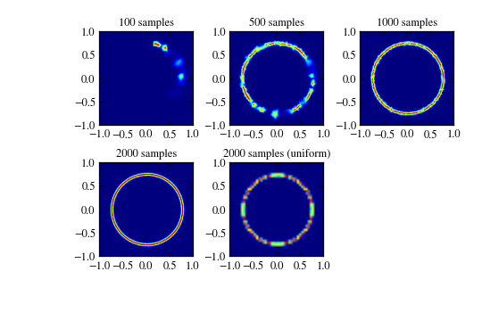

Adaptive sampling of 2-D functions¶
Author: pv
Submitted on: 2012-11-22 09:01:05-08:00
Sample a 2-D function via adaptive subdivision.
The sample points are chosen by estimating the point where the linear and cubic interpolants based on the existing points have maximal disagreement. This point is then taken as the next point to be sampled.
In practice, this sampling protocol results to sparser sampling of smooth regions, and denser sampling of regions where the function changes rapidly, which is useful if the function is expensive to compute.
This sampling procedure is not extremely fast, so to benefit from it, your function needs to be slow enough to compute.
The figure below shows results from sampling the function \(e^{-(x^2+y^2 - 3/4)^2/a^4)}\) with 2000 points. The result from adaptive sampling is here much more accurate than the result found by computing the function on an uniform grid with the same number of points. (Although, for this simple function, adaptive sampling is slower.)
# License: Creative Commons Zero (almost public domain) http://scpyce.org/cc0
# See example at the bottom
import numpy as np
from scipy import interpolate, optimize, special
class AdaptiveTriSampling(object):
"""
Sample a 2-D function adaptively.
Parameters
----------
bounds : list of 2-tuples
A list ``[(a1, b1), (a2, b2), ...]`` containing bounds,
one per dimension.
periodic : list of bool, optional
A list of booleans describing which dimensions are periodic.
Note: this is not necessarily extremely useful option, your
mileage may vary. Default: none.
dtype : dtype, optional
Type of data from function. Default: float (real-valued)
Methods
-------
sample
Add new samples obtained from a function.
add
Add a new sample point. Use in combination with `next()`.
next
Return next sampling point.
Attributes
----------
points
Sample points so far.
values
Sampled values so far.
integral
Estimate for the N-dim integral over the bounded area,
based on an interpolant constructed from the samples.
Notes
-----
Requires Scipy >= 0.9.0.
The sample points are chosen by estimating the point where the
linear and cubic interpolants based on the existing points have
maximal disagreement. This point is then taken as the next point
to be sampled.
In practice, this sampling protocol results to sparser sampling of
smooth regions, and denser sampling of regions where the function
changes rapidly, which is useful if the function is expensive to
compute.
This sampling procedure is not extremely fast, so to benefit from
it, your function needs to be slow enough to compute.
Examples
--------
See below.
"""
def __init__(self, bounds, periodic=None, dtype=float):
self.ndim = len(bounds)
if self.ndim != 2:
raise ValueError("Only 2-D sampling supported (for now)")
self.bounds = tuple([(float(a), float(b)) for a, b in bounds])
self.periods = (None,)*self.ndim
if periodic is not None:
if not hasattr(periodic, '__len__'):
if periodic:
self.periods = [b[1] - b[0] for b in self.bounds]
else:
self.periods = [b[1] - b[0] if x else None
for b, x in zip(self.bounds, periodic)]
if len(self.periods) != self.ndim:
raise ValueError("Wrong number of periods")
self._points = np.zeros([100, self.ndim])
self._values = np.zeros([100], dtype)
self.n = 0
self.ip = None
self.nstack = 10
self._stack = []
pts = []
for j, (a, b) in enumerate(self.bounds):
if j == 0:
def _append(x):
pts.append((x,))
else:
opts = pts
pts = []
def _append(x):
for r in opts:
pts.append(r + (x,))
if self.periods[j] is None:
_append(a)
_append(b)
else:
_append(a)
self._stack = pts
def sample(self, func, n, *a, **kw):
for j in range(n):
p = self.next()
arg = tuple(p) + a
v = func(*arg, **kw)
self.add(p, v)
@property
def points(self):
return self._points[:self.n]
@property
def values(self):
return self._values[:self.n]
@property
def integral(self):
"""Integral over triangles, via midpoint rule"""
if self.ip is None:
return np.nan
self.ip = interpolate.LinearNDInterpolator(self.points, self.values)
tri = self.ip.tri
center = tri.points[tri.vertices].mean(axis=1) / (self.ndim + 1)
center_val = self.ip(center)
p = tri.points[tri.vertices]
q = p[:,:-1,:] - p[:,-1,None,:]
vol = abs(np.asarray([np.linalg.det(q[k,:,:])
for k in range(tri.nsimplex)]))
vol /= special.gamma(1 + self.ndim)
return (vol * center_val).sum()
def add(self, point, value):
nmax = self.values.shape[0]
if self.n >= nmax:
self._values = np.resize(self._values, [2*nmax + 10])
self._points = np.resize(self._points, [2*nmax + 10, self.ndim])
self._points[self.n] = point
self._values[self.n] = value
self.n += 1
def next(self):
if not self._stack:
self._fill_stack()
p = self._stack.pop(0)
return p
def _fill_stack(self):
# Deal with periodicity: extend by one period
p = self.points
v = self.values
for j, per in enumerate(self.periods):
if per is not None:
pp = p.copy()
pp[:,j] += per
pm = p.copy()
pm[:,j] -= per
p = np.r_[p, pm, pp]
v = np.r_[v, v, v]
if v.shape[0] < self.ndim+1:
raise ValueError("too few points...")
# Interpolate
self.ip = interpolate.LinearNDInterpolator(p, v)
ip = self.ip
tri = ip.tri
# Gradients
# XXX: the following line is the only line that is specific to 2D;
# otherwise this approach will work also in N dimensions
grad = interpolate.interpnd.estimate_gradients_2d_global(
tri, self.ip.values.ravel(), tol=1e-6)
p = tri.points[tri.vertices]
g = grad[tri.vertices]
v = (ip.values.ravel())[tri.vertices]
dev = 0
for j in range(self.ndim):
vest = v[:,j,None] + ((p[:,:,:] - p[:,j,None,:]) * g[:,j,None,:]).sum(axis=-1)
dev += abs(vest - v).max(axis=1)
q = p[:,:-1,:] - p[:,-1,None,:]
if self.ndim == 2:
# faster specialization in 2D
vol = abs(q[:,0,0]*q[:,1,1] - q[:,0,1]*q[:,1,0])
elif self.ndim == 3:
# faster specialization in 3D
vol = abs(
+ q[:,0,0]*q[:,1,1]*q[:,2,2]
+ q[:,0,1]*q[:,1,2]*q[:,2,0]
+ q[:,0,2]*q[:,1,0]*q[:,2,1]
- q[:,0,2]*q[:,1,1]*q[:,2,0]
- q[:,0,1]*q[:,1,0]*q[:,2,2]
- q[:,0,0]*q[:,1,2]*q[:,2,1]
)
else:
# slow general case
vol = abs(np.asarray([np.linalg.det(q[k,:,:])
for k in range(tri.nsimplex)]))
vol /= special.gamma(1 + self.ndim)
dev *= vol
# Take new points
try:
cp = 0.9*dev.max()
nstack = min(self.nstack, (dev > cp).sum())
if nstack <= 0:
raise ValueError()
except ValueError:
nstack = 1
def point_exists(p):
eps = np.finfo(float).eps * self.points.ptp() * 100
if abs(p - self.points).sum(axis=1).min() < eps:
return True
if self._stack:
if abs(p - np.asarray(self._stack)).sum(axis=1).min() < eps:
return True
return False
for j in range(len(dev)):
jsimplex = np.argmax(dev)
# -- Estimate point of maximum curvature inside the simplex
p = tri.points[tri.vertices[jsimplex]]
v = ip.values[tri.vertices[jsimplex]]
g = grad[tri.vertices[jsimplex]]
transform = tri.transform[jsimplex]
point_new = _max_disagreement_location_in_simplex(p, v, g, transform)
# -- Reduce to main period
for j, per in enumerate(self.periods):
if per is not None:
point_new[j] = point_new[j] % per
# -- Reduce to bounds
for j, (a, b) in enumerate(self.bounds):
point_new[j] = max(a, min(b, point_new[j]))
# -- Check if it is really new (also, revert to mean point optionally)
if point_exists(point_new):
dev[jsimplex] = 0
continue
# Add to stack
self._stack.append(point_new.copy())
if len(self._stack) >= nstack:
break
else:
dev[jsimplex] = 0
def mean(self):
n = self.n**(1.0/self.ndim + 0.1)
p = np.zeros((n, self.ndim), float)
for j in range(self.ndim):
p[:,j] = np.linspace(self.bounds[j][0], self.bounds[j][1], n)
return self.ip(p).mean()
def _max_disagreement_location_in_simplex(points, values, grad, transform):
"""
Find the point of maximum disagreement between linear and quadratic model
Parameters
----------
points : (ndim+1, ndim)
Locations
values : (ndim+1)
Values
grad : (ndim+1, ndim)
Gradients
Notes
-----
Based on maximizing the disagreement between a linear and a cubic model::
f_1(x) = a + sum_j b_j (x_j - x_0)
f_2(x) = a + sum_j c_j (x_j - x_0) + sum_ij d_ij (x_i - x_0) (x_j - x_0)
+ sum_ijk e_ijk (x_i - x_0) (x_j - x_0) (x_k - x_0)
|f_1(x) - f_2(x)|^2 = max!
The parameter a, b are estimated from values of the function, and the
parameters c, d, e from values and gradients.
"""
ndim = points.shape[1]
m = points.shape[0]
values = values.ravel()
x = points - points[-1]
z = values - values[-1]
# -- Least-squares fit: (i) linear model
b, _, _, _ = np.linalg.lstsq(x[:-1], z[:-1])
# -- Least-squares fit: (ii) cubic model
# (ii.a) fitting function values
x2 = (x[:-1,:,None] * x[:-1,None,:]).reshape(m-1, ndim*ndim)
x3 = (x[:-1,:,None,None] * x[:-1,None,:,None] * x[:-1,None,None,:]
).reshape(m-1, ndim*ndim*ndim)
lhs1 = np.c_[x[:-1], x2, x3]
rhs1 = z[:-1]
# (ii.b) fitting gradients
d_b = np.tile(np.eye(ndim)[None,:,:], (m, 1, 1)).reshape(m*ndim, ndim)
o = np.eye(ndim)
d_d = (
o[None,:,None,:] * x[:,None,:,None]
+
x[:,None,None,:] * o[None,:,:,None]
).reshape(m*ndim, ndim*ndim)
d_e = (
o[:,None,:,None,None] * x[None,:,None,:,None] * x[None,:,None,None,:]
+
x[None,:,:,None,None] * o[:,None,None,:,None] * x[None,:,None,None,:]
+
x[None,:,:,None,None] * x[None,:,None,:,None] * o[:,None,None,None,:]
).reshape(m*ndim, ndim*ndim*ndim)
lhs2 = np.c_[d_b, d_d, d_e]
rhs2 = grad.ravel()
# (ii.c) fit it
lhs = np.r_[lhs1, lhs2]
rhs = np.r_[rhs1, rhs2]
cd, _, rank, _ = np.linalg.lstsq(lhs, rhs)
c = cd[:ndim]
d = cd[ndim:ndim+ndim*ndim].reshape(ndim, ndim)
e = cd[ndim+ndim*ndim:].reshape(ndim, ndim, ndim)
# -- Find point of maximum disagreement, inside the triangle
itr = np.linalg.inv(transform[:-1])
def func(x):
x = itr.dot(x)
v = -abs(((c - b)*x).sum()
+ (d*x[:,None]*x[None,:]).sum()
+ (e*x[:,None,None]*x[None,:,None]*x[None,None,:]).sum()
)**2
return np.array(v)
cons = [lambda x: np.array([1 - x.sum()])]
for j in range(ndim):
cons.append(lambda x: np.array([x[j]]))
ps = [1.0/(ndim+1)] * ndim
p = optimize.fmin_slsqp(func, ps, ieqcons=cons, disp=False,
bounds=[(0,1)]*ndim)
p = itr.dot(p) + points[-1]
return p
if __name__ == "__main__":
# -- Example:
from numpy import pi, exp, sqrt
ix = [0]
def func(x, y):
ix[0] += 1
print "%4d / 2000" % ix[0]
a = 0.2
return exp(-(x**2 + y**2 - 0.75**2)**2/a**4)
import matplotlib.pyplot as plt
s = AdaptiveTriSampling([(-1, 1), (-1, 1)])
x = np.linspace(-1, 1, 201)
y = np.linspace(-1, 1, 201)
s.sample(func, 100)
plt.subplot(231)
plt.title('100 samples')
ip = interpolate.LinearNDInterpolator(s.points, s.values)
z = ip(x[:,None], y[None,:])
plt.imshow(z.T, extent=(-1, 1, -1, 1), interpolation='bilinear')
s.sample(func, 400)
plt.subplot(232)
plt.title('500 samples')
ip = interpolate.LinearNDInterpolator(s.points, s.values)
z = ip(x[:,None], y[None,:])
plt.imshow(z.T, extent=(-1, 1, -1, 1), interpolation='bilinear')
s.sample(func, 500)
plt.subplot(233)
plt.title('1000 samples')
ip = interpolate.LinearNDInterpolator(s.points, s.values)
z = ip(x[:,None], y[None,:])
plt.imshow(z.T, extent=(-1, 1, -1, 1), interpolation='bilinear')
s.sample(func, 1000)
plt.subplot(234)
plt.title('2000 samples')
ip = interpolate.LinearNDInterpolator(s.points, s.values)
z = ip(x[:,None], y[None,:])
plt.imshow(z.T, extent=(-1, 1, -1, 1), interpolation='bilinear')
plt.subplot(235)
plt.title('2000 samples (uniform)')
nx = int(sqrt(2000))
x = np.linspace(-1, 1, nx)
y = np.linspace(-1, 1, nx)
ip = interpolate.LinearNDInterpolator(s.points, s.values)
z = ip(x[:,None], y[None,:])
plt.imshow(z.T, extent=(-1, 1, -1, 1), interpolation='bilinear')
plt.subplots_adjust(left=0.2, bottom=0.2,
right=0.95, top=0.9,
wspace=0.3, hspace=0.4)
plt.savefig('sampling-2d.png', dpi=90)
plt.show()